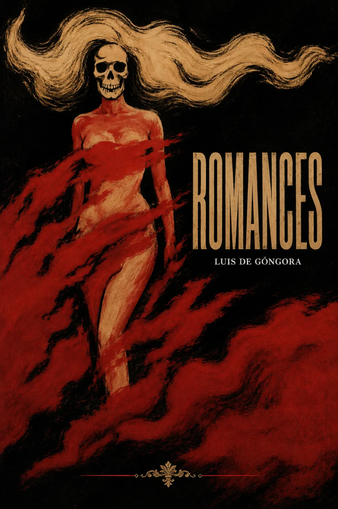

Escucha ahora
SINOPSIS
Esta primera edición reunida de los romances de Luis de Góngora recoge la faceta más popular y versátil de un poeta mejor conocido por la dificultad culterana de sus Soledades. Romances moriscos y pastoriles conviven con baladas burlescas y de amor, mostrando la misma inventiva verbal del "Príncipe de los poetas" puesta al servicio de una forma tradicional y cantable. Publicados y difundidos en gran parte tras su muerte, consolidaron su fama incluso entre quienes nunca leyeron sus obras mayores.
CAPÍTULOS
Romances moriscos
Romances pastoriles
Romances de amor
Romances burlescos
Romances de circunstancias y sátira
RESEÑAS

Bueno